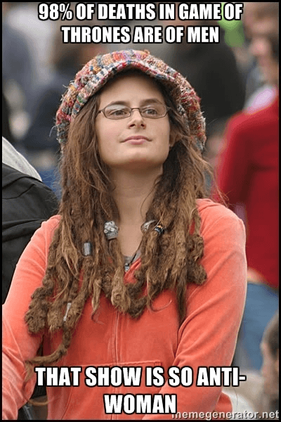

Thomas Hobbes is an Australian uni student hiding out in his mother's basement waiting for the singularity to arrive. As a backup plan he is secretly hoping to avoid the perils of an actual career by becoming a writer and travelling the world.


I’ve often wondered, as I’m sure many of us do, just how different it is to be rich and famous. Are rich people fundamentally happier than we are? Are they constantly jumping around for joy because they found that pot at the end of the rainbow? We wonder if they are, but every now and then something comes along to remind you that actually, the rich are just like us.
They still have, for instance, an unquenchable and all-too-human desire to have something to complain about, no matter what. With this in mind, Jennifer Lawrence, the world’s most highly paid actress, took to Facebook recently to complain about all those male stars getting paid more than her.
While it may be true, yes, that male stars tend to earn a bigger paycheck, the question remains exactly why this is? Can audiences just not take women seriously in major roles? There may be several reasons, but there’s one in particular that no one wants to talk about.
In regular workplaces, a big reason men tend to earn more is because they choose jobs where they experience greater risk. Its hardly surprising that, given we do the jobs that account for more than 90% of workplace deaths, us men get a few dollars an hour extra to compensate.
Like a typical working women who wonders why she gets paid less than men despite working in a comfortable, air-conditioned office 9-5 Monday to Friday, female stars just can’t work out why so many more roles are available to men. Let me try and shed some light here.
The reason is because male characters – like their real world equivalents – suffer far more than their female co-stars.
This isn’t hard to prove.
For instance, if there’s one big show on at the moment which draws the ire of feminists because of its frequent depictions of violence against women, its obviously Game of Thrones. But here’s the thing, even misogynistic, medieval Thrones shows violence that is almost exclusively between men. Don’t believe me? You can check for yourself. Somebody (with way too much time on their hands) took the trouble of making a compilation of all of the onscreen deaths in the show.
The grand total comes to 373 deaths – nearly ten an episode (and that’s just the first four seasons).
But here’s the thing. Out of the those 373, how many depict women dying? Half? Three-quarters? A third? Actually it’s a much, much smaller number. So small, I’m going to put a trigger warning on this next sentence. For those who have not yet swallowed the red pill, imminent, worldview-changing facts are about to appear.
The answer – out of those 373 deaths, the number of people who die on the show, who are women…comes to…seven.
Seven.
Not seventy. Not a hundred and seven. Seven. Against 366 men. Put another way – 98% of all the onscreen deaths in Game of Thrones are of men. Seriously, I’m going to have to put this in meme form. Please share it far and wide.

The most poignant scene of this has to be in Blackwater when King’s Landing is under siege. The men are outside, fighting and dying. There’s limbs getting chopped off. Men drowning. Men burning alive. Where are the women?
Inside, cowering and getting drunk…and if memory serves correct – they’re still fucking complaining. Really, think of any violent movie or TV show. How many women do you see with limbs blown off? With burns covering most of their body? With a sword sticking through their chest? Can anyone name the female equivalent of Sean Bean?
People complain all the time. Oh! There’s no enough women in Star Wars. Well fucking thank god! Most people in Star Wars get killed. It’s why its Star Wars.
Really ladies, which part did you want to play? The guy who gets all his limbs chopped off, is horribly burned and has to live in a suit which breathes for him the rest of his life? His son, who also gets a limb chopped off, finds himself fighting some horrible monster at least once per movie and later has to compete with his father in a fight to the death?
Perhaps the guy who is horribly tortured by the empire for information, frozen in carbonite, and nearly fed to another giant monster? Or just one of those anonymous stormtroopers or fighter pilots, who are always men, and who you see for like five seconds before they get a laser through the chest and die?
You know why women didn’t play those roles? Because the audience simply wouldn’t accept it.
Harrison Ford can cut down twenty guys, and it’s a spectacle. One woman gets a paper cut, and everyone loses their goddamn minds. In 2015, as in 1977, or probably 1348 for all I know, audiences simply won’t put up with women being tortured, having limbs chopped off or otherwise suffering horrible, violent deaths the same way as men, at least not with such flippancy.
Its just visceral. Sure they can die, but if they do, it better be at the climax of the movie. Women suffering is nearly always a major plot point. Men suffering is just entertainment. Art imitates life. Whether we’re talking about workplace accidents, car crashes, violence or suicide, men bare the brunt of nearly any kind of suffering, Our media reflects this. We simply won’t put up with women being treated like such cannon fodder.
One tiny downside for the fairer sex, as Jennifer Lawrence is starting to become aware of even if she doesn’t quite understand it, is that, yes, female actresses may be excluded from a number of the more “interesting” roles. Suffering breeds character, and without that suffering, there will be fewer roles for female actresses to play.
And to add insult to injury, its hardly the patriarchy that is enforcing these standards. Its those same feminists who screech the loudest about “violence against women” that are sabotaging their own cause. If viewers can’t handle violence against women, then Hollywood directors aren’t going to put female actresses in dangerous situations.
Hence, poor Jen has to put up with a smaller paycheck.
Read More: Did Sarah Silverman Lie About Getting Paid Less Than A Man?
{kind=link}
{kind=link}
{kind=link}